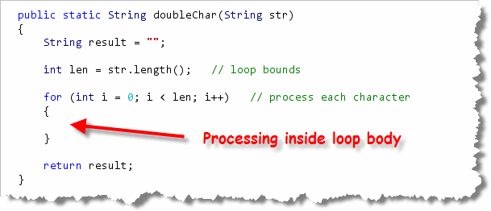
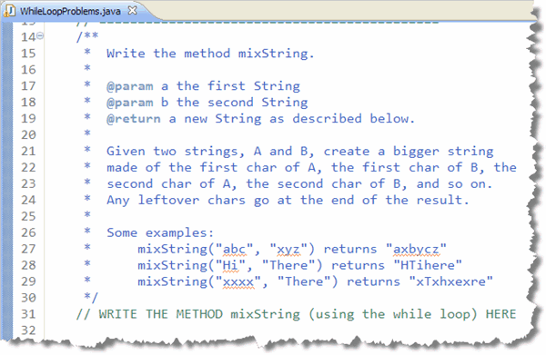

In the last chapter you learned how to write
functions that made decisions. In this chapter you learned how
write for
loops and while loops.
In this section, we want to marry those two concepts together,
and learn how to write functions that process
Strings and numbers using the for loop
and the while loop. These are similar to the problems
you'll see on your CS 170 programming proficiency quizzes.
Loops and Functions
We'll start by getting some practice using the
for loop to solve String problems.
To do that, open LoopProblems.java in DrJava.
Once you have it open,
scroll down and find the doubleChar problem:
 As before you have:
As before you have:
- The name of the function you need to write.
- The Javadoc parameters and return type.
- A short "problem statement".
- Some examples.
- A comment you should replace with the actual function.
Before you start typing, though, let's take a look at some basic strategy. You'll normally want to attack these kinds of problems using the same basic strategy. Here's how I do that.
Step 1: Skeleton and Return Type
Even though all of these simple loop problems process
Strings, they don't necessarily return
String values. Some will, but others will return
int or boolean values.
My first step (after I've written the header, of course), is to
always to create an "empty" variable of the
correct type and then add a return statement, so that I can
run the program and see what the tests do. Here's what you'd
do for doubleChar():

Step 2: Loop through the String
These problems all require the use of loops.
Because you can easily find the length of the String,
you'll almost always use the for loop. Here's the
general pattern that I follow, even before I give any thought
to what my code is actually going to do:

Step 3: What's the Goal?
Now we're ready to look at what the output should be. In this case, we want our output to contain two characters for each character in input.
In general, if you want to examine every character, you can do it like this:
char ch = str.charAt(i);
or, you can do it like this:
String chStr = str.subString(i, i + 1);
The first technique gives you back a char
variable which is easy to compare using the various
relational operators. You'll have to use the second
technique if you need to process more than one character
on each repetition.
In this case, we can go either way. We need to grab each
character and then "paste" that character onto the output
String two times to double it. Here's a version
using charAt():

Notice that you need to concatenate the characters with the
String output, not add the two characters
together and concatenate that. Concatenation works with
Strings, not characters. If you were to
write this:
result += c + c;
then the two characters would be added as Unicode characters and
the resulting numeric value would be pasted onto the
end of your String.
Here's a version of the same loop, using the substring()
method instead of charAt():
 Note that because the variable
Note that because the variable cStr is a String
rather than a char, you can use the shorthand
assignment operator in this instance.
A Second Example
Let's look at a second example, just to make sure you have the
idea. Scroll down until you find the problem named
countHi. For this, all you need to do is count the number of times
that the word "hi" appears in the given String.

The first step is exactly like the previous problem. Because the
return type of this function is int, I create a
numeric variable (instead of a String), and return that:

The second step is very similar to last problem, but has a
little twist that you need to pay attention to. In the
first problem, our loop visited each character
in the String.
In this problem, we are looking for
a two-character wide String, so we can't
loop through the entire String, because we
will be examining (or "extracting") two characters at a time, instead of only
one. If we looped through the entire String, then
when we got to the last character, and then tried to get a
substring consisting of the next two characters, the
program would generate an "out of bounds" runtime error.
In general, if was intend to extract or examine n
characters, then our loop should go from 0 to len - (n - 1)
like I've done here:
 Note also, that the
Note also, that the substring extraction code
always looks like str.substring(i, i + n)
where n is the number of characters for the resulting
substring, and the loop condition always looks like
i < len - (n - 1). In this case, since we want to get
two characters, "n" is 2 and the loop condition is i < len - 1.
Finally, to compare the extracted substring with the literal
value "hi", you need to use the equals() method.
If equals() returns true, then you'll
increment your counter. Here's what the final loop
looks like:

Hands-On While Loop Problems
To get some practice using the while loop, open the
WhileLoopProblems program in this chapter's code folder,
and then locate the mixString() problem at the top of the
file:

As you can see, themixString() method has two
input Strings, a and b,
and your method is going to produce a new String
with the characters from a and b
interleaved. If one input String is
larger than the other, then the extra characters will appear
at the end of the output String.
While you could solve this using the for
loop, the purpose of the exercises is to learn how to use the
while loop. Because of that, the test program actually
has to read your source code to see if you are using while
instead of for. That means you can't have any
for loops inside
your method, even if they are commented out.
Solving the Problem
So, where do we start, now that we're working with while
loops instead of for loops?

We Start With the Method Skeleton!

Once you have the header, the results and the return
expression, you can run your tests.
 HMMM. That's kind of annoying. It looks like we really do
need to use the
HMMM. That's kind of annoying. It looks like we really do
need to use the while loop, or the test program
won't even check the program.
The while Loop Skeleton
No worries though. Just like we had a standard loop skeleton for
a for loop, we can do the same thing for while.
(You'll find this skeleton earlier in the lesson.) Applying that to
the mixString problem gives us this:
 In this case I:
In this case I:
- Create a "dummy" variable for ending the loop.
- Create a counter before the loop starts.
- Compare the counter to the loop bounds in the
whileconditional expression. - Update my counter at the end of each loop repetition.
A textbook example. Now let's think about our loop plan and see how we actually solve the problem.
What is the Loop's Bounds?
In this problem, we want to interleave the characters from
two Strings, but each may have a different length.
That means that our loop will have to stop when the
shorter String has been processed.
We can use that information to set our bounds variable
len to the length of the shorter String,
like this:
 Now, the loop will stop at the right place.
Now, the loop will stop at the right place.
We've already taken care of the bounds precondition and advancing the loop by using our ready-made while-loop skeleton. So let's move on to the goal.
The Loop Operations
Our generic function skeleton took care of Step 4 in our standard loop-development plan (creating variables to hold the loop's output.) Let's move on to Step 5: the loop operations.
What we want to do in each repetition, is place one character
from a in the output, followed by the character
at the same index position from b. We can do that
easily by using this code:
 At this point, our method should pass all of the tests
where the input
At this point, our method should pass all of the tests
where the input Strings are both the same length.
Unfortunately, the fellow who wrote the tests was especially
devious, and so only 3 of the 13 tests actually have equal-length
parameters. Bummer.
The Loop Post-Conditions
That means, to solve this problem, we'll have to think of the post-conditions to the loop. Remember, a loop ends because its bounds are reached, not because its goal has been accomplished.
How can we tell if our loop has accomplished all we desired?
By using the if statement to check if conditions
are as we expect. In this case, if the variable len
is less than the length of either input String,
then we still have some characters left over. We need to
"paste" them onto the end of the output like this:
 Notice that because we're using a counted
Notice that because we're using a counted while loop
instead of a for loop, that the counter
i is still available after the loop ends. That
means we can use i to extract the rest of either
a or b if necessary.